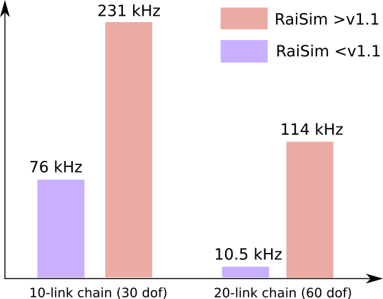

Performance
RaiSim Custom Algorithm for Articulated Systems
RaiSim v2.0.0 introduces a novel simulation scheme. Previous versions of RaiSim (as well as other simulators such as MuJoCo, according to their documentation) utilize the following computation scheme for the forward dynamics of articulated systems:
Composite Rigid Body Algorithm (CRBA)
Recursive Newton-Euler (RNE)
Mass matrix inversion using Cholesky factorization
These algorithms are highly efficient for computing forward dynamics. However, a more efficient alternative exists: the Articulated Body Algorithm (ABA). ABA bypasses the explicit computation of the mass matrix, directly calculating the generalized acceleration. Consequently, it significantly outperforms the CRBA+RNE+Cholesky (CRC) combination.
The computational complexity of the CRC method is O(n^3), where n represents the number of degrees of freedom. This implies that the computational cost scales cubically with the degrees of freedom. In contrast, the computational complexity of the ABA is O(n). Thus, the ABA offers superior efficiency compared to the CRC for high-degree-of-freedom systems.
Nevertheless, the mass matrix and its inverse are critical for computing numerous contact-related properties required by contact solvers. This necessitates the use of the CRC combination in older versions of RaiSim and other simulators. Since standard ABA does not yield these properties, it was historically less applicable to rigid-body simulation with contacts.
RaiSim v2.0.0 is equipped with a family of novel algorithms that compute contact-related properties with O(n) complexity. These algorithms do not explicitly compute the mass matrix or its inverse (which contain n^2 elements and cannot be computed in O(n)). Instead, they calculate only the specific properties required by the RaiSim contact solver. Consequently, RaiSim (>v1.1) computes the entire forward dynamics of an articulated system, including contact-related properties, with O(n) complexity. The specifics of these algorithms and their computations are proprietary. No materials related to these algorithms have been published.
Performance Factors
Rigid-body simulators typically comprise four major computational units:
Collision detection: O(n^2)
Forward dynamics computation: O(n)
Contact properties computation: O(nm)
Contact solver: O(???)
Here, n represents the degrees of freedom, and m represents the number of contact points.
In many robotic simulations, collision detection (1) consumes the majority of computational resources. It is recommended to model only essential collision bodies. Failure to do so negates the benefits of the optimized rigid-body simulation pipeline in 2, 3, and 4.
In the absence of collisions, simulation time should scale roughly linearly with the degrees of freedom of the system. The following plot illustrates this scaling.
{kind=link}

As demonstrated above, a 60-DoF system can be simulated at 114 kHz.
The model utilized in the aforementioned benchmark lacks collision bodies. For a large system such as the 60-DoF chain, collision detection would dominate the computation time. Therefore, minimizing the number of collision bodies is crucial.
The new simulation scheme demonstrates superior average performance compared to the legacy scheme. However, unit 3 (contact properties computation) was faster in the legacy scheme because the pre-computed inverse mass matrix facilitated this step. Although our O(n) algorithm performs comparably to the legacy scheme even without the inverse mass matrix, a marginal difference remains. Consequently, the legacy scheme may exhibit higher performance in scenarios involving a large number of contact points.
For the ANYmal robot without collision, the new scheme executes at 318 kHz. This represents an improvement over the legacy version, which ran at 272 kHz.
All simulation benchmarks were conducted on a single core of an AMD Ryzen 3950X, which offers respectable but not industry-leading single-thread performance. Currently, the Apple M2 processor demonstrates the highest single-thread performance for RaiSim. The ANYmal simulation without contacts achieves 380 kHz on the M1 chip.
Linux and macOS are the preferred platforms for high-speed simulation applications. Performance on Windows may be reduced due to compilation with MSVC, which generally applies less aggressive optimization to mathematical operations compared to other compilers.
The computational cost of unit 4 (contact solver) becomes significant when there are more than 10 coupled contact points. Therefore, identifying and eliminating unnecessary contact points is important. The computational cost of 4 depends on the nature of the coupling. If contact points are uncoupled, the cost is O(n). However, if they are highly coupled, the problem becomes NP-hard, implying that the computational cost no longer follows a polynomial relationship.